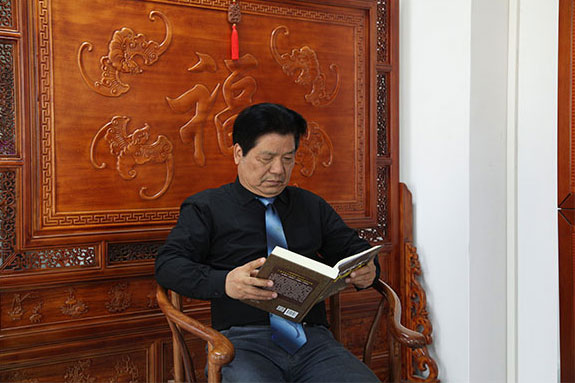
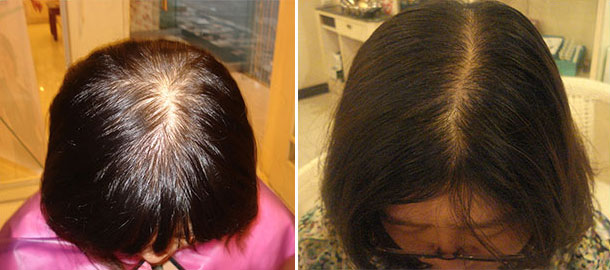
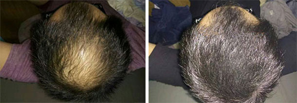
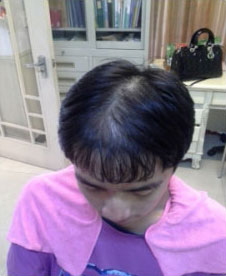

——中华的千年瑰宝
每个人，都希望自己拥有一头乌黑发亮的头发。与人交际，拥有一头飘逸的秀发，会给人留下美好的印象。但是事与愿违，越来越多的人为脱发而烦恼？？？很多人偏向西医治疗，但结果却都不尽人意！要么见效慢，要么复脱，要么就是存在各种副作用且有一定的不可逆转的因素。从而一度导致脱发成为世界的难题!
中医是中华几千年流传下来，老祖宗给我们留下的宝贵财富。值得一提的是，苗家男女老少从未见过有脱发的情况，头发乌黑发亮。这是因为苗家山寨，医农合一，人人都有一技之长，个个都有疗病的药。其医药文化以天然绿色、方法奇特、简练实用和疗效确切而著称，被誉为“大山深处的瑰宝”。
我是苗三千，出生于一个中医世家，我家祖传中医药馆就坐落在湘西镇集上，对来就诊的秃顶患者，运用祖传秘方将中草药物捣烂熬成汁，帮助病人止住非正常情况脱发，再生毛发。随着外出务工的越来越多，脱发患者也越来越多，可以毫不夸张的说，到2008年我已积累近千名患者。
秉承“医者父母心”的心态，2009年-2012年期间，我针对脱发人群进行了区分：A.脂溢性脱发，B.神经性脱发，C.内分泌脱发，D. 头皮敏感脱发。经过近五年的研究，将前人经验与当今实践相结合，我对祖传中药草配方进行了更进一步的改进，根据不同的脱发问题提供专属的配方，顾客使用后反馈效果更好，超过期望值。苗老师咨询号：13060851268（长按可复制加微信）
我有着十几年的专业治疗脱发经验，已积累近千名患者。经过整理，我这里发一些经我治疗后脱发患者的前后真实案例。另外，针对药物性脱发，我建议可以去医院做检查后再治疗。较多生发产品效果止步于表面的细小黄毛，而我的配方生发效果更胜一筹，能够长出正常的头发。给你看得见、感觉得到的效果。
这位脱发患者是一位产后妈妈，属于内分泌紊乱造成的脱发，生育小孩后的半年时间掉发严重，头部冠状区变稀已显露出头皮。每次梳头都是一大把，当时非常害怕。了解她的详细情况后，我为她搭配了一个疗程的古方健发液，用了2个月的时间，掉发现象已有很大的改善，掉发的部位也长出新的头发，半年后，头发恢复如初。
下面这位患者属于脂溢性脱发，男性人群80%都属于这种类型。最典型就是从前额、头顶开始秃顶，头皮非常爱出油，洗头、梳头都会大把大把掉发。对于脂溢性脱发，我会根据患者的不同症状和问题，提供专属的配方进行治疗，1-2疗程进行防脱治疗，3-4疗程再进行生发的治疗。大部分患者经过半年到一年的时间，基本可以使头发变茂盛浓密。
另外，针对脂溢性脱发，我一般都建议是少洗头，洗头越勤更容易刺激头皮加重病情，这也是我经总结把配方设为隔天使用的最重要原因。
其实对于脱发，预防大于治疗。掉发、脱发的治疗一定要趁早，治疗效果也会越好。厂家声称7天生发，甚至3天生新发，这都违背了科学规律！头发的生长也是有周期的，处于休止期的头发也要经过一段时间才能长出来！
愿每个人都拥有一头健康秀美的头发，大家有任何脱发方面的问题，可加苗老师咨询号：13060851268（长按可复制加微信），我会细心为你解答！！
八天前
第二次回来了，第一次买的感觉还是有点小贵，但是用了一段时间后感觉很值,掉发的情况减少了。这次果断再买两瓶，想头发快点长出来。
八天前
蛮好用的，我的头皮是有问题的，以前一到夏天恨不得一天洗两次头，不然头痒得受不了，用了这个苗老师搭配的产品改善了很多了，可以隔一两天这样了。感觉蛮值的。希望这次尝试能给我更多惊喜！
八天前
没想到物流速度那么快，下了单隔天就到了。快递这方面很好！！ 另外，当晚就用上了，味道闻起来很舒服，用了之后也发现没那么油了。。很不错！！ 挺好的..
七天前
我头发出油而且掉头发，请问怎么加苗老师微信，我想咨询下。
z***x 回复 苗老师咨询号：13060851268（长按可复制加微信）
六天前
苗老师搭配的产品使用后感觉真好，有药材的味道，3次后就不油了,头发也掉的没那么厉害了,哈哈。赞！
六天前
每次洗頭梳頭髮都感覺掉好多，头发也很油腻，我这种是什么问题呢！ 
楼主 回复 你这种情况属于神经性脱发，具体的情况还要详细诊断后才能使用产品。建议少熬夜，少吃刺激性的食物。
四天前
我也是掉发很厉害，每次梳头都是一大把，大家都说效果还行，我也想试试了。
三天前
老客户了，是好产品，头屑掉发减少了，和他们描述的一样，我朋友用了也说不错 好东西 值得推荐。
三天前
真心不错！他家产品控油防脱效果不错！很喜欢！一直都在用！谢谢！还会坚持使用的！
三天前
我脱发也很严重，真的可以治好吗？
z***x 回复 具体情况我要了解后，才能根据你的情况来治疗，苗老师咨询号：13060851268（长按可复制加微信）